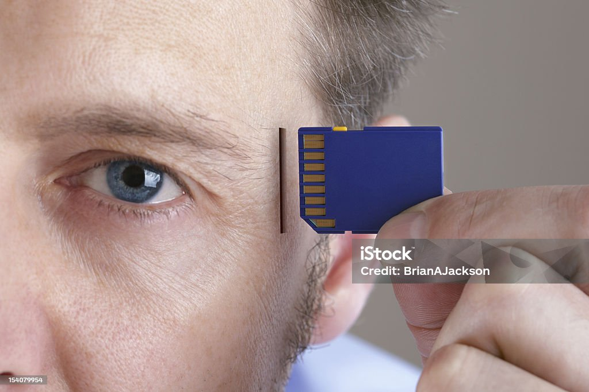

Einführung
Neurochips übersetzen neuronale Aktivität in digitale Signale. Anwendung: Prothesensteuerung, Therapie von Bewegungsstörungen, Forschung.
THS & Anwendungen
Tiefe Hirnstimulation hilft Parkinson-Patienten; andere Ansätze zielen auf Epilepsie-Reduktion oder Depressionstherapie.
BCI-Systeme
Invasive vs. nicht-invasive Systeme: trade-off zwischen Präzision und Risiko. Implantate erlauben präzisere Steuerung.
Forschung
Nanodrähte, flexible Elektroden und KI verbessern Signalqualität; Ethik & Datenschutz sind sehr wichtig.